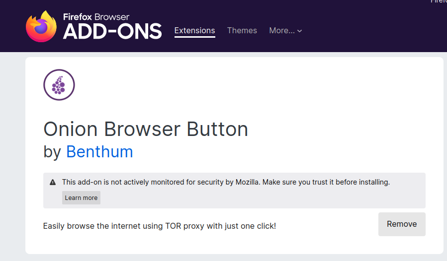

Running the OnionRTC project
Setting up the machine
The project has been verified, run and tested on a Ubuntu 22.04.1 LTS VM, with 4-8GB RAM and 2-3 CPU cores.
See the scripts in the client script folder to get an idea of what dependencies are needed.
See Deployment folder for diagrams, explanations and Ansible scripts.
Fake video and audio stream
To simulate a Video and audio call, we create a fake webcam and microphone, which the browser can get as a input stream and use for the WebRTC stream/application. See the scripts in the client script folder for setting it up in ubuntu.
To make sure that the selenium script uses the correct "fake" microphone, we need to make sure that any other microphone is disabled. In the VM running ubuntu it can be done by following the solution here, by blacklisting "snd_hda_intel".
Selenium
Install python requirements and the geckodriver by following the instructions
Development
When developing in a VM with ssh in vs code, you can enable x11 Forwarding, by running an ssh session in another terminal window by running the command:
ssh -X user@VM
Tor and Firefox setup for testing
The client should have installed and setup a running instance of tor. See the script setup_tor.sh for ubuntu instructions
We also need to install firefox, which the geckodriver uses. This should also be in the script.
Now the following command should show the install path of firefox:
$ which firefox
/usr/bin/firefox
Because of the possible privacy leaks in using STUN and WebRTC, WebRTC has been disabled from the Tor Browser. So the project uses the firefox Browser, and sets the proxy settings to point at the local Tor proxy. A ff addon is needed for quick access to setting the Tor proxy. The addon simply adds a button for toggling the tor proxy on and off. This can be used when testing manually in the browser.

When setting up the addon, it will ask for permisson to also run in "Private Window", press Allow and press Okay.

When the addon has been added, you simply need to press start and wait for the "Connected to 127.0.0.1:9050" message. Now you are connected to the Tor network.